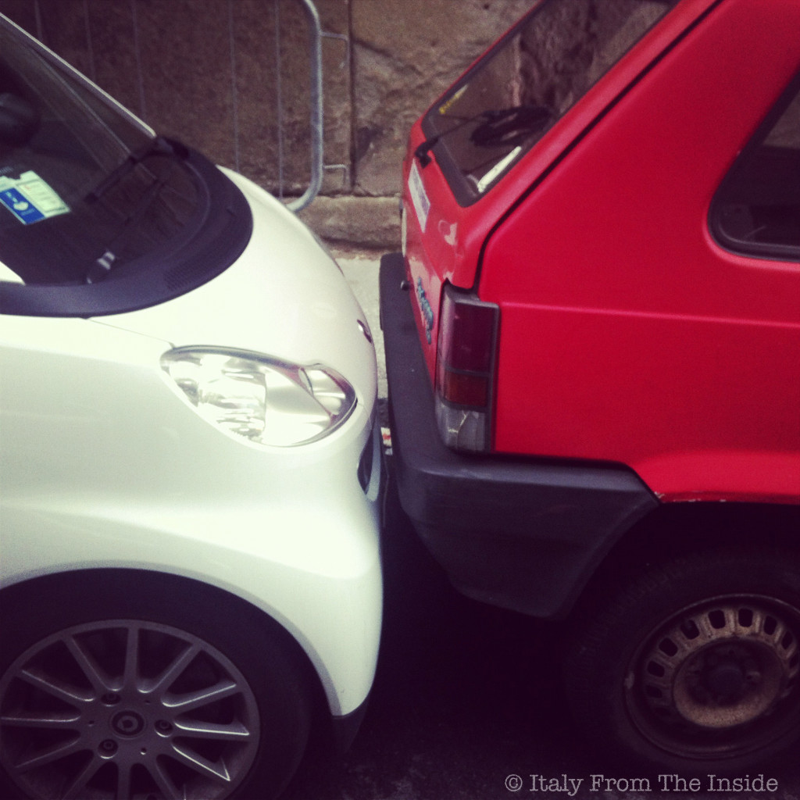
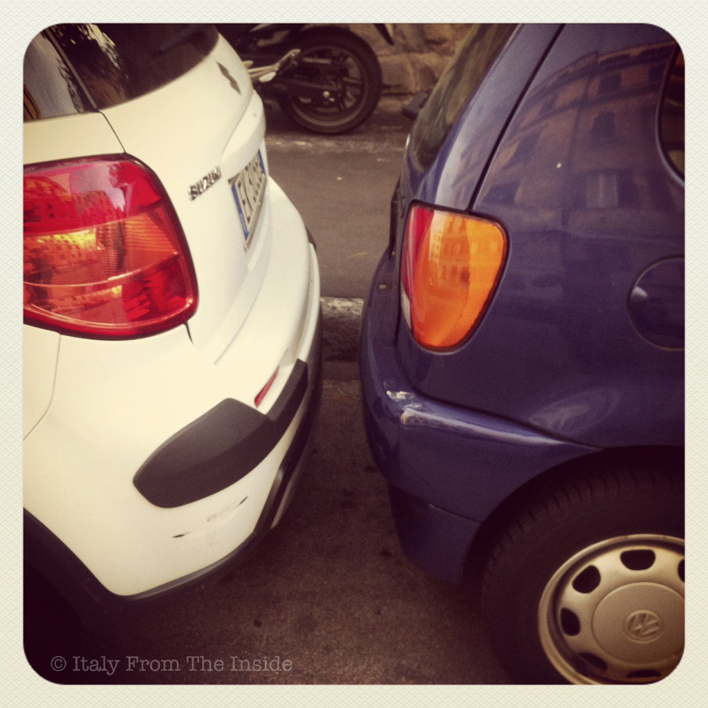

Correct, in both cases the car on the left is white :). All joking aside, it is not unusual at all to see two cars parked like this in Italy. Space is limited on the streets and sometimes it is truly a miracle to find a spot where you can park your car. For this reason Italians have been compelled to refine their driving skills. Believe it or not, Italians are great drivers.